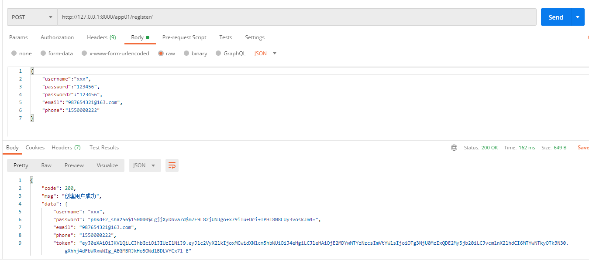
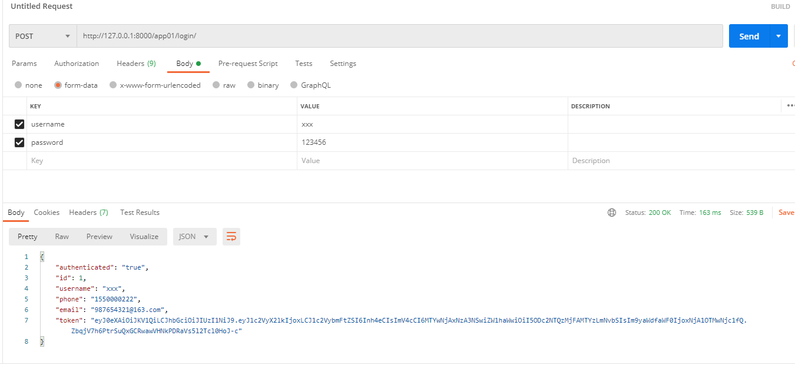
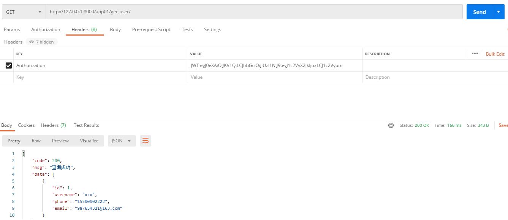

# 1.JWT 安装配置
- 安装 JWT
pip install djangorestframework-jwt==1.11.0 |
- 在
settings.py配置 jwt 载荷中的有效期设置
# jwt 载荷中的有效期设置 | |
JWT_AUTH = { | |
# 1.token 前缀：headers 中 Authorization 值的前缀 | |
'JWT_AUTH_HEADER_PREFIX': 'JWT', | |
# 2.token 有效期：一天有效 | |
'JWT_EXPIRATION_DELTA': datetime.timedelta(days=1), | |
# 3. 刷新 token：允许使用旧的 token 换新 token | |
'JWT_ALLOW_REFRESH': True, | |
# 4.token 有效期：token 在 24 小时内过期，可续期 token | |
'JWT_REFRESH_EXPIRATION_DELTA': datetime.timedelta(hours=24), | |
# 5. 自定义 JWT 载荷信息：自定义返回格式，需要手工创建 | |
'JWT_RESPONSE_PAYLOAD_HANDLER': 'app01.views.jwt_response_payload_handler', | |
} |
- 在
settings.py配置默认的认证方式
REST_FRAMEWORK = { | |
# 认证器 | |
'DEFAULT_AUTHENTICATION_CLASSES': [ | |
'rest_framework_jwt.authentication.JSONWebTokenAuthentication', # 在 DRF 中配置 JWT 认证 | |
], | |
} |
- 在
settings.py配置自定义验证后端登录
AUTHENTICATION_BACKENDS = [ | |
'app01.views.Manylogin' | |
] |
- 在
settings.py注册用户模型
AUTH_USER_MODEL = 'app01.User' |
# 2. 重写 Django 用户模型
models.py
from django.db import models | |
from django.contrib.auth.models import AbstractUser | |
# 用户表 | |
class User(AbstractUser): | |
username = models.CharField(max_length=50,unique=True) | |
password = models.CharField(max_length=255) | |
email = models.CharField(max_length=255,null=True,blank=True) | |
phone = models.CharField(max_length=255,null=True,blank=True) | |
class Meta: | |
db_table = 'tb_user' |
# 3. 生成 Token
utils.py
from rest_framework_jwt.settings import api_settings | |
def creare_token(user): | |
jwt_payload_handler = api_settings.JWT_PAYLOAD_HANDLER | |
jwt_encode_handler = api_settings.JWT_ENCODE_HANDLER | |
payload = jwt_payload_handler(user) | |
token = jwt_encode_handler(payload) | |
return token |
# 4. 序列化器
serializers.py
from .models import * | |
from rest_framework import serializers | |
from django.contrib.auth.hashers import make_password | |
from .utils import creare_token | |
class CreateUserSerializers(serializers.Serializer): | |
username = serializers.CharField() | |
password = serializers.CharField() | |
email = serializers.CharField(allow_null=True) | |
phone = serializers.CharField() | |
token = serializers.CharField(read_only=True) | |
def create(self, validated_data): | |
user = User.objects.create(**validated_data) | |
password = make_password(validated_data.get('password')) | |
user.password = password | |
user.save() | |
token = create_token(user) | |
user.token = token | |
return user |
# 5. 注册接口
views.py
from django.db.models import Q | |
from rest_framework.views import APIView | |
from rest_framework.response import Response | |
from .serializers import * | |
from . import models | |
from django.contrib.auth.backends import ModelBackend | |
from rest_framework.permissions import IsAuthenticated | |
from rest_framework_jwt.authentication import JSONWebTokenAuthentication | |
class UserView(APIView): | |
def post(self, request): | |
data = request.data | |
print(data) | |
if not all(['username', 'password', 'password2', 'email', 'phone']): | |
return Response({'code': 202, 'msg': '参数不全'}) | |
if data['password'] != data['password2']: | |
return Response({'code': 204, 'msg': '两次密码不一致'}) | |
try: | |
user = CreateUserSerializers(data=data) | |
user.is_valid() | |
user.save() | |
return Response({'code': 200, 'msg': '创建用户成功', 'data': user.data}) | |
except Exception as e: | |
return Response({'code': 201, 'msg': '创建失败，请重试'}) |
urls.py
from django.urls import path | |
from app01 import views | |
from rest_framework_jwt.views import obtain_jwt_token | |
urlpatterns = [ | |
path('register/', views.UserView.as_view()), | |
] |
- Postman 测试

# 6. 登录及多形式登录
views.py
def jwt_response_payload_handler(token, user=None, request=None): | |
return { | |
'authenticated': 'true', | |
'id': user.id, | |
'username': user.username, | |
'phone':user.phone, | |
'email': user.email, | |
'token': token, | |
} | |
# 多形式登录 | |
class Manylogin(ModelBackend): | |
# 重写 authenticate 方法 | |
def authenticate(self, request, username=None, password=None, **kwargs): | |
try: | |
user = User.objects.get(Q(username=username) | Q(phone=username) | Q(email=username)) | |
if user is not None and user.check_password(password): | |
return user | |
except Exception as e: | |
print(e) | |
return None |
urls.py
from django.urls import path | |
from app01 import views | |
from rest_framework_jwt.views import obtain_jwt_token | |
urlpatterns = [ | |
path('register/', views.UserView.as_view()), | |
path('login/', obtain_jwt_token), | |
] |
- Postman 测试登录

- Postman 测试多形式登录
# 7. 携带 token 访问所有用户
serializers.py
class UserInfoSerializers(serializers.ModelSerializer): | |
class Meta: | |
model = User | |
fields = ('id','username','phone','email') |
views.py
from rest_framework.views import APIView | |
from rest_framework.response import Response | |
from .serializers import * | |
from . import models | |
from rest_framework.permissions import IsAuthenticated | |
class UserInfoView(APIView): | |
# 认证用户才可访问 | |
permission_classes = [IsAuthenticated] | |
def get(self, request): | |
user = User.objects.all() | |
obj = UserInfoSerializers(user, many=True) | |
return Response({'code': 200, 'msg': '查询成功', "data": obj.data}) |
urls.py
from django.urls import path | |
from app01 import views | |
from rest_framework_jwt.views import obtain_jwt_token | |
urlpatterns = [ | |
path('register/', views.UserView.as_view()), | |
path('login/', obtain_jwt_token), | |
path('get_user/', views.UserInfoView.as_view()), | |
] |
- Postman 测试
